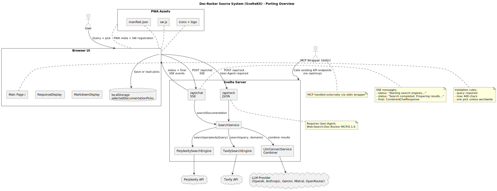

Context and Scope
- Product: Doc-Rocker (documentation search assistant).
- Target: Phoenix LiveView app with pixel-identical UI and full feature parity.
- Source of truth:
doc-rocker-svelte.mdfor UI, CSS, and behavior. - Assets: use
static/as-is (PWA manifest, SW, icons, logo). - Hosting: self-hosted via Docker.
- PWA: keep manifest + service worker behavior.
System Map

Main UI - Structure and Components
Page Layout
- Single page at
/with a centered layout and max width ~1200px. - Components:
LogoGfx,InputField,SendButton,DocumentationPicks,ResponseDisplay. - Streaming status area appears during loading with fade in/out animation.
Logo
- Uses
/logo.webpwith a gradient border and rounded square framing. - When loading: "rock on" animation (rotation + scale).
Input Field
- Textarea with max 400 characters. Shows character count.
- Near-limit warning at 80 percent of limit.
- Over-limit styles and warning message.
- Submit via Meta+Enter or Send button.
Send Button
- Gradient button with send icon; spinner while loading.
- Disabled when loading, empty query, no picks, or over character limit.
Documentation Picks
- Predefined picks (grid of buttons) and optional custom domain input.
- Only one pick active at a time (unless worldwide search mode).
- Custom domain validation with regex and inline error.
- Persists selection in
localStoragekeyselectedDocumentationPicks.
Response Display
- Shows combined answer, citations, and raw results with citations.
- Error block with icon and red styling when request fails.
Markdown Display
- Uses
marked+highlight.js(GitHub theme). - Copy buttons for code blocks, plus copy-as-markdown and copy-as-rich-text.
UI Behavior and Validation
- Query required; errors for empty query or over 400 chars.
- At least one pick required.
- Only one pick allowed while in beta (unless worldwide
*is selected). - While loading: clear previous response, show animated status message area.
- Auto-scroll to status area on start and to combined result on completion.
Streaming Flow (SSE)
- Client calls
POST /api/chatand expectstext/event-stream. - Stream messages are lines:
data: {"type":"status", "message":"..."}. - Status lines are appended with line breaks; final includes combined response.
data: {"type":"status","message":"Starting search engines..."}
data: {"type":"status","message":"Search completed. Preparing results..."}
data: {"type":"final","result": {"combined_search_result": {...}, "raw_search_results": [...]}}
Current stream only sends status updates and a final payload. It does not stream partial model tokens.
API Endpoints
POST /api/chat (SSE)
- Request body:
{"query": string, "documentationPicks": DocumentationPick[]} - Response: SSE stream with status and final combined result.
POST /api/rock (JSON)
- Validates User-Agent:
Web-Search-Doc-Rocker-MCP/0.1.0. - Request body:
{"query": string, "domainRestriction": string} - Response: JSON with timestamp, request echo, and search result.
POST /api/mcp (JSON-RPC 2.0)
- Described in README with MCP protocol 2024-11-05.
- Tools:
search_documentationandlist_documentation_sources. - Implementation code not present in
doc-rocker-svelte.md.
Other
- Client helper exists for
/api/authusing bearer token, but server handler not in source extract.
Search Pipeline and Services
SearchServiceruns Perplexity + Tavily in parallel, then combines via LLM.- Perplexity query includes
site:domainterms; domain filter only if not worldwide. - Tavily request uses
include_answer: "advanced"with optional domain filter. - Combined answer format includes an AI Answer header, warning, and model info.
Combined answer format:
## AI Answer
<answer>
---
_**Please verify the information before using it.** ..._
_AI-Model: <model>_Key Data Types
DocumentationPick: { name, domain, selected? }
ChatRequest: { query, documentationPicks }
CombinedChatResponse: { combined_search_result, raw_search_results }
SingleChatResponse: { answer, citations? }Environment and Config
- Perplexity:
VITE_PERPLEXITY_API_KEY,VITE_PERPLEXITY_MODEL - Tavily:
VITE_TAVILY_API_KEY - Combiner:
VITE_COMBINER_PROVIDER,VITE_COMBINER_PROVIDER_MODEL,VITE_COMBINER_API_KEY
PWA and SEO
- PWA meta tags and theme color in app shell.
- Manifest:
static/manifest.json. - Service worker:
static/sw.jswith cache-first for static assets and offline fallback page.
Static Assets
static/logo.webpstatic/favicon.pngstatic/icon-192x192.pngstatic/icon-512x512.pngstatic/manifest.jsonstatic/sw.js
Tests in Source
SearchService.test.tscovers search combination behavior./api/rocktests validate User-Agent, input validation, and response shape.
Known Gaps or Clarifications Needed
/api/mcpimplementation not included in source extract./api/authserver handler not included in source extract.
These gaps must be resolved before final porting to guarantee full API parity.